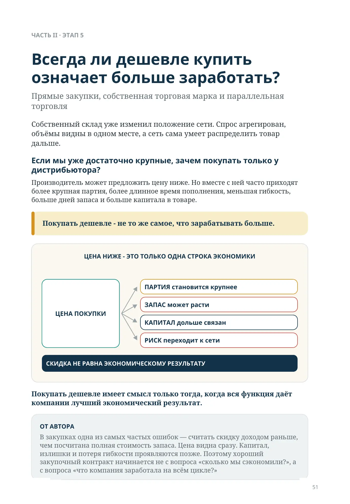
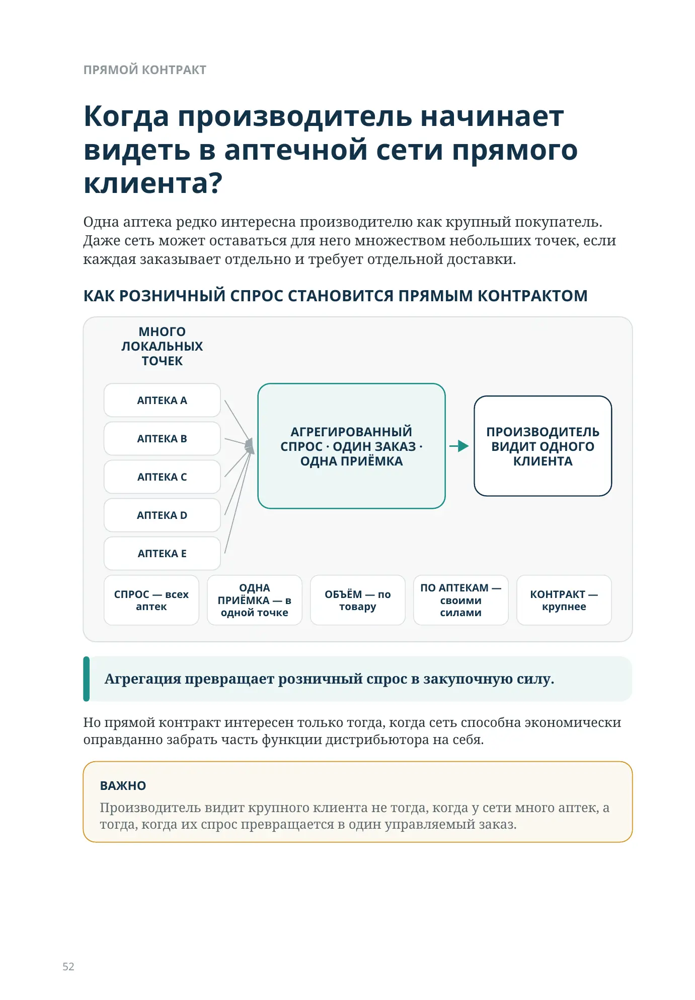
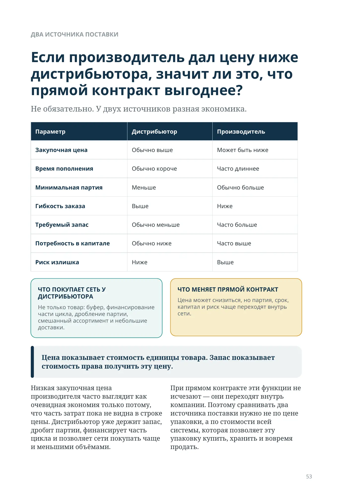
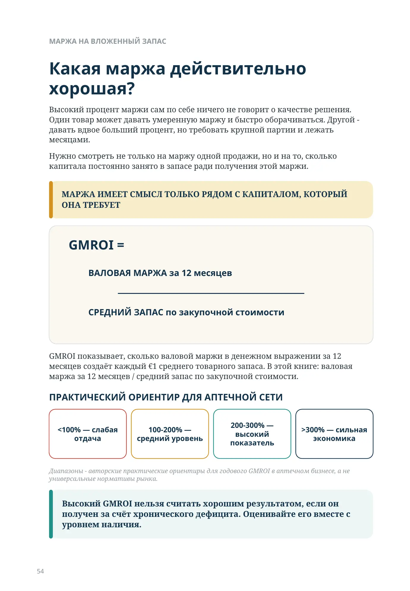
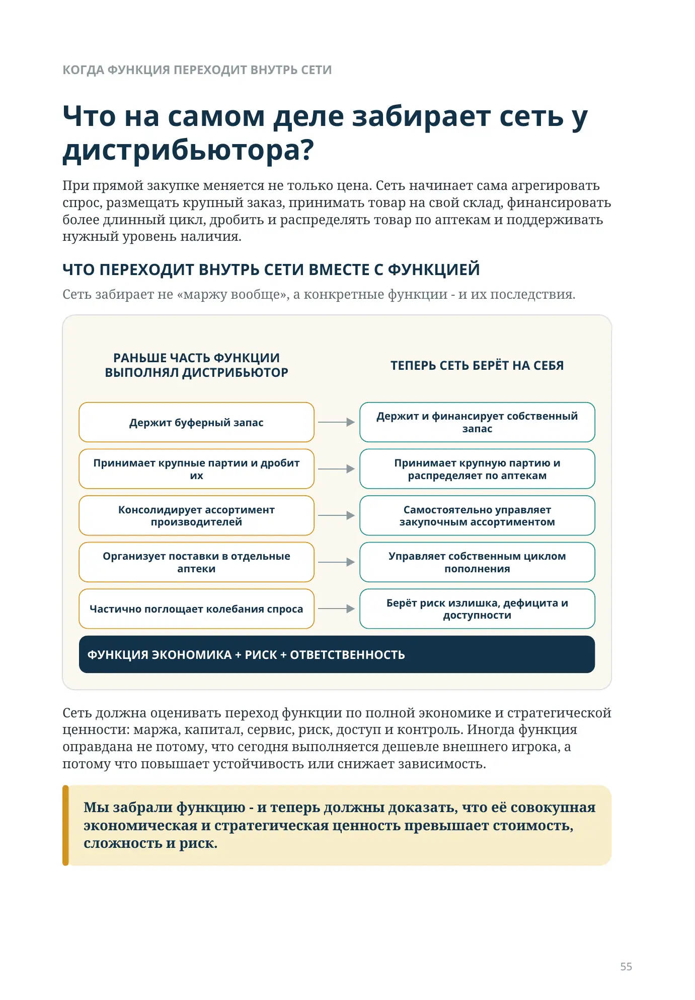
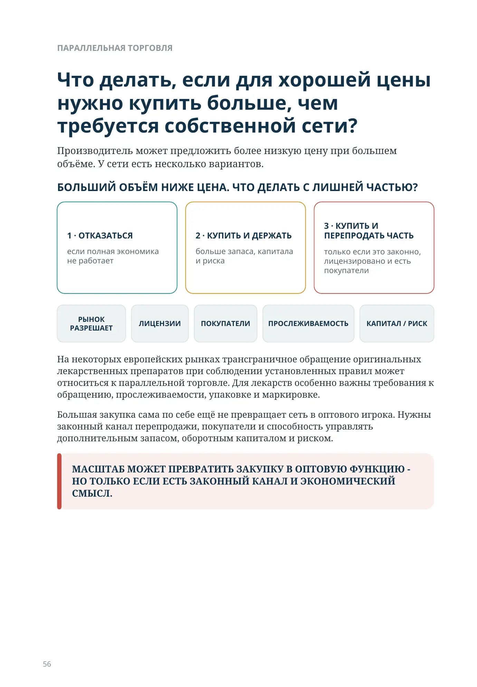
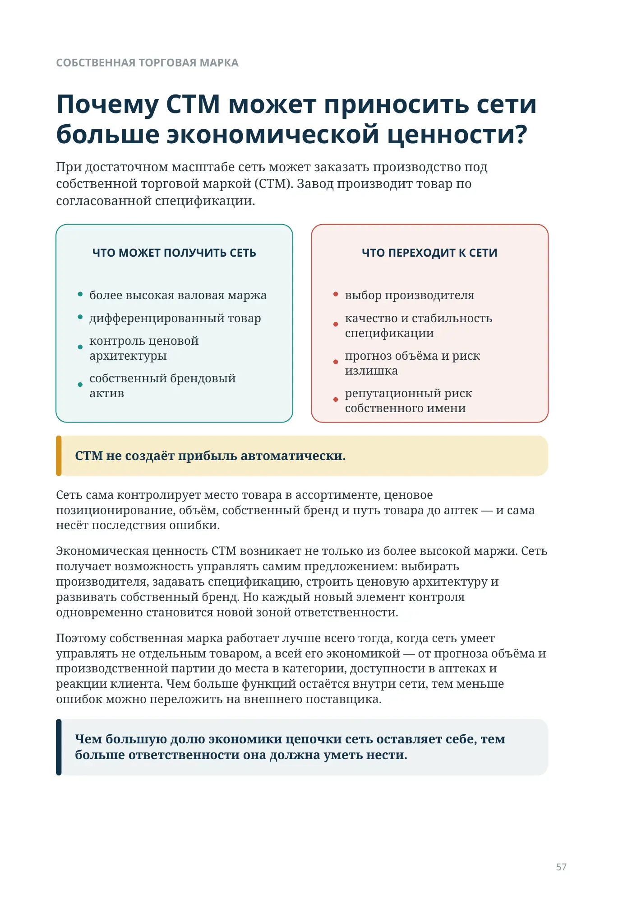
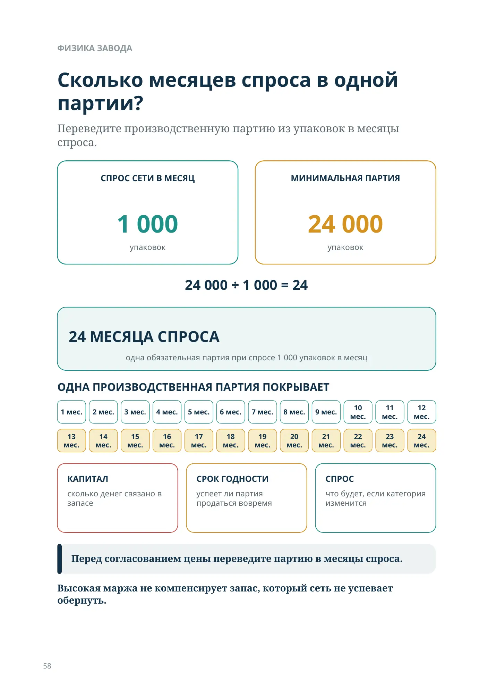
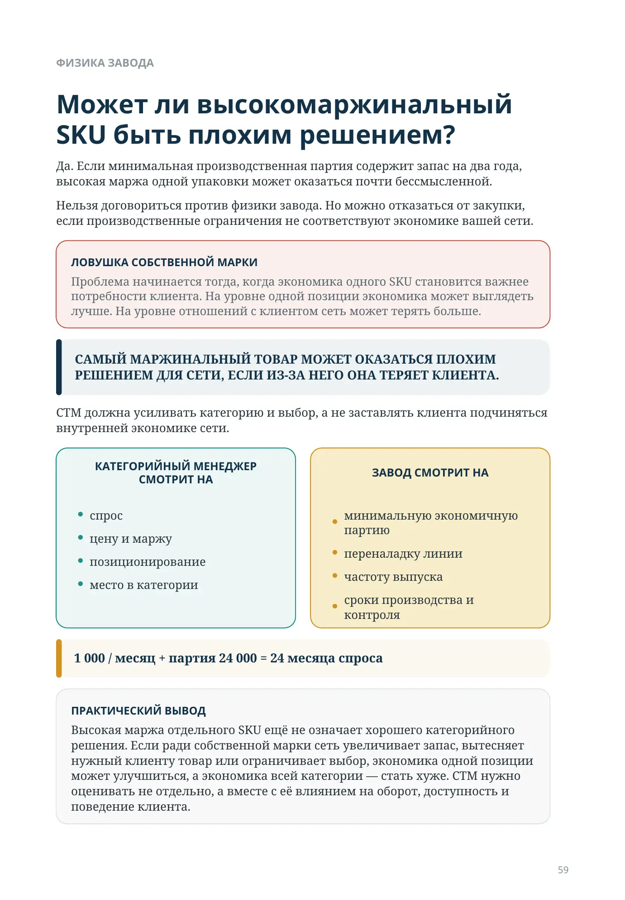
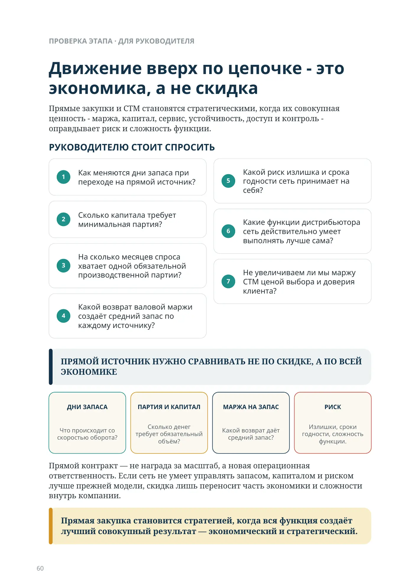
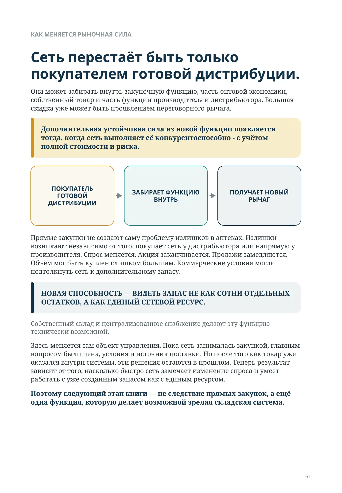
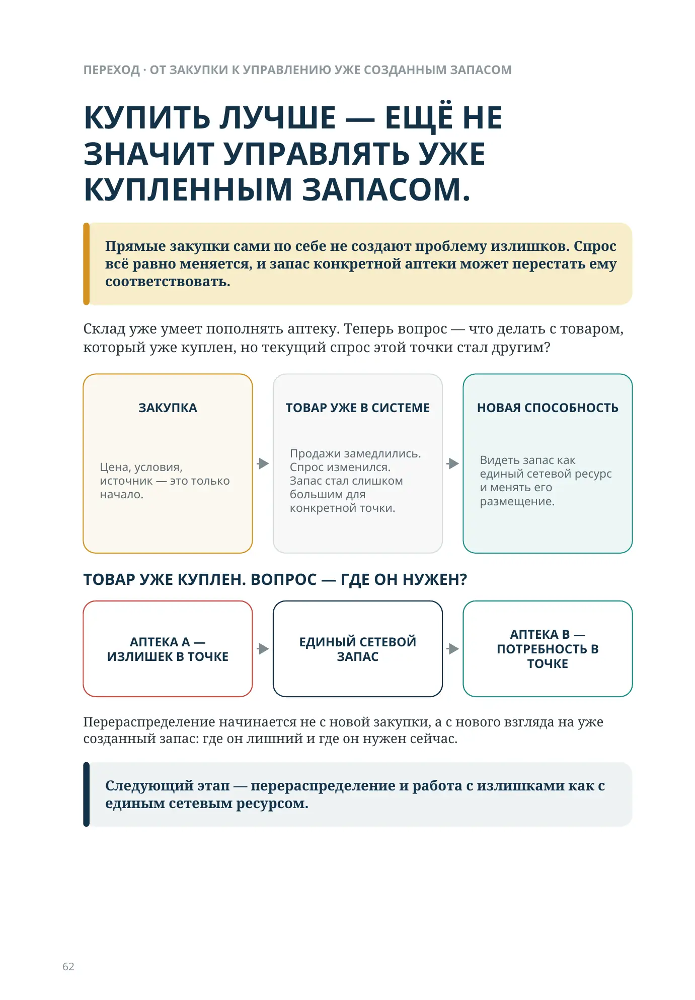
Всегда ли дешевле купить означает больше заработать?
ЧАСТЬ II · ЭТАП 5
Всегда ли дешевле купить означает больше заработать?
Прямые закупки, собственная торговая марка и параллельная торговля
Собственный склад уже изменил положение сети. Спрос агрегирован, объёмы видны в одном месте, а сеть сама умеет распределить товар дальше.
Если мы уже достаточно крупные, зачем покупать только у дистрибьютора?
Производитель может предложить цену ниже. Но вместе с ней часто приходят более крупная партия, более длинное время пополнения, меньшая гибкость, больше дней запаса и больше капитала в товаре.
Покупать дешевле - не то же самое, что зарабатывать больше.
ЦЕНА НИЖЕ - ЭТО ТОЛЬКО ОДНА СТРОКА ЭКОНОМИКИ
ЦЕНА ПОКУПКИ
ПАРТИЯ становится крупнее
ЗАПАС может расти
КАПИТАЛ дольше связан
РИСК переходит к сети
СКИДКА НЕ РАВНА ЭКОНОМИЧЕСКОМУ РЕЗУЛЬТАТУ
Покупать дешевле имеет смысл только тогда, когда вся функция даёт компании лучший экономический результат.
ПРЯМОЙ КОНТРАКТ
Когда производитель начинает видеть в аптечной сети прямого клиента?
Одна аптека редко интересна производителю как крупный покупатель. Даже сеть может оставаться для него множеством небольших точек, если каждая заказывает отдельно и требует отдельной доставки.
КАК РОЗНИЧНЫЙ СПРОС СТАНОВИТСЯ ПРЯМЫМ КОНТРАКТОМ
МНОГО ЛОКАЛЬНЫХ ТОЧЕК
АГРЕГИРОВАННЫЙ СПРОС · ОДИН ЗАКАЗ · ОДНА ПРИЁМКА
ПРОИЗВОДИТЕЛЬ ВИДИТ ОДНОГО КЛИЕНТА
СПРОС — всех аптек
ОДНА ПРИЁМКА — в одной точке
ОБЪЁМ — по товару
ПО АПТЕКАМ — своими силами
КОНТРАКТ — крупнее
Агрегация превращает розничный спрос в закупочную силу.
Но прямой контракт интересен только тогда, когда сеть способна экономически оправданно забрать часть функции дистрибьютора на себя.
ДВА ИСТОЧНИКА ПОСТАВКИ
Если производитель дал цену ниже дистрибьютора, значит ли это, что прямой контракт выгоднее?
Не обязательно. У двух источников разная экономика.
| Параметр | Дистрибьютор | Производитель |
|---|---|---|
| Закупочная цена | Обычно выше | Может быть ниже |
| Время пополнения | Обычно короче | Часто длиннее |
| Минимальная партия | Меньше | Обычно больше |
| Гибкость заказа | Выше | Ниже |
| Требуемый запас | Обычно меньше | Часто больше |
| Потребность в капитале | Обычно ниже | Часто выше |
| Риск излишка | Ниже | Выше |
Цена показывает стоимость единицы товара. Запас показывает стоимость права получить эту цену.
Низкая закупочная цена производителя часто выглядит как очевидная экономия только потому, что часть затрат пока не видна в строке цены. Дистрибьютор уже держит запас, дробит партии, финансирует часть цикла и позволяет сети покупать чаще и меньшими объёмами.
При прямом контракте эти функции не исчезают — они переходят внутрь компании. Поэтому сравнивать два источника поставки нужно не по цене упаковки, а по стоимости всей системы, которая позволяет эту упаковку купить, хранить и вовремя продать.
МАРЖА НА ВЛОЖЕННЫЙ ЗАПАС
Какая маржа действительно хорошая?
Высокий процент маржи сам по себе ничего не говорит о качестве решения. Один товар может давать умеренную маржу и быстро оборачиваться. Другой - давать вдвое больший процент, но требовать крупной партии и лежать месяцами.
Нужно смотреть не только на маржу одной продажи, но и на то, сколько капитала постоянно занято в запасе ради получения этой маржи.
МАРЖА ИМЕЕТ СМЫСЛ ТОЛЬКО РЯДОМ С КАПИТАЛОМ, КОТОРЫЙ ОНА ТРЕБУЕТ
ВАЛОВАЯ МАРЖА за 12 месяцев ÷ СРЕДНИЙ ЗАПАС по закупочной стоимости = GMROI
GMROI показывает, сколько валовой маржи в денежном выражении за 12 месяцев создаёт каждый €1 среднего товарного запаса. В этой книге: валовая маржа за 12 месяцев / средний запас по закупочной стоимости.
ПРАКТИЧЕСКИЙ ОРИЕНТИР ДЛЯ АПТЕЧНОЙ СЕТИ
<100% — слабая отдача
100-200% — средний уровень
200-300% — высокий показатель
>300% — сильная экономика
Диапазоны - авторские практические ориентиры для годового GMROI в аптечном бизнесе, а не универсальные нормативы рынка.
Высокий GMROI нельзя считать хорошим результатом, если он получен за счёт хронического дефицита. Оценивайте его вместе с уровнем наличия.
КОГДА ФУНКЦИЯ ПЕРЕХОДИТ ВНУТРЬ СЕТИ
Что на самом деле забирает сеть у дистрибьютора?
При прямой закупке меняется не только цена. Сеть начинает сама агрегировать спрос, размещать крупный заказ, принимать товар на свой склад, финансировать более длинный цикл, дробить и распределять товар по аптекам и поддерживать нужный уровень наличия.
ЧТО ПЕРЕХОДИТ ВНУТРЬ СЕТИ ВМЕСТЕ С ФУНКЦИЕЙ
Сеть забирает не «маржу вообще», а конкретные функции - и их последствия.
РАНЬШЕ ЧАСТЬ ФУНКЦИИ ВЫПОЛНЯЛ ДИСТРИБЬЮТОР
- Держит буферный запас
- Принимает крупные партии и дробит их
- Консолидирует ассортимент производителей
- Организует поставки в отдельные аптеки
- Частично поглощает колебания спроса
ТЕПЕРЬ СЕТЬ БЕРЁТ НА СЕБЯ
- Держит и финансирует собственный запас
- Принимает крупную партию и распределяет по аптекам
- Самостоятельно управляет закупочным ассортиментом
- Управляет собственным циклом пополнения
- Берёт риск излишка, дефицита и доступности
ФУНКЦИЯ ЭКОНОМИКА + РИСК + ОТВЕТСТВЕННОСТЬ
Сеть должна оценивать переход функции по полной экономике и стратегической ценности: маржа, капитал, сервис, риск, доступ и контроль. Иногда функция оправдана не потому, что сегодня выполняется дешевле внешнего игрока, а потому что повышает устойчивость или снижает зависимость.
Мы забрали функцию - и теперь должны доказать, что её совокупная экономическая и стратегическая ценность превышает стоимость, сложность и риск.
ПАРАЛЛЕЛЬНАЯ ТОРГОВЛЯ
Что делать, если для хорошей цены нужно купить больше, чем требуется собственной сети?
Производитель может предложить более низкую цену при большем объёме. У сети есть несколько вариантов.
БОЛЬШИЙ ОБЪЁМ НИЖЕ ЦЕНА. ЧТО ДЕЛАТЬ С ЛИШНЕЙ ЧАСТЬЮ?
1 · ОТКАЗАТЬСЯ
если полная экономика не работает
2 · КУПИТЬ И ДЕРЖАТЬ
больше запаса, капитала и риска
3 · КУПИТЬ И ПЕРЕПРОДАТЬ ЧАСТЬ
только если это законно, лицензировано и есть покупатели
РЫНОК РАЗРЕШАЕТ
ЛИЦЕНЗИИ
ПОКУПАТЕЛИ
ПРОСЛЕЖИВАЕМОСТЬ
КАПИТАЛ / РИСК
На некоторых европейских рынках трансграничное обращение оригинальных лекарственных препаратов при соблюдении установленных правил может относиться к параллельной торговле. Для лекарств особенно важны требования к обращению, прослеживаемости, упаковке и маркировке.
Большая закупка сама по себе ещё не превращает сеть в оптового игрока. Нужны законный канал перепродажи, покупатели и способность управлять дополнительным запасом, оборотным капиталом и риском.
МАСШТАБ МОЖЕТ ПРЕВРАТИТЬ ЗАКУПКУ В ОПТОВУЮ ФУНКЦИЮ - НО ТОЛЬКО ЕСЛИ ЕСТЬ ЗАКОННЫЙ КАНАЛ И ЭКОНОМИЧЕСКИЙ СМЫСЛ.
СОБСТВЕННАЯ ТОРГОВАЯ МАРКА
Почему СТМ может приносить сети больше экономической ценности?
При достаточном масштабе сеть может заказать производство под собственной торговой маркой (СТМ). Завод производит товар по согласованной спецификации.
ЧТО МОЖЕТ ПОЛУЧИТЬ СЕТЬ
- более высокая валовая маржа
- дифференцированный товар
- контроль ценовой архитектуры
- собственный брендовый актив
ЧТО ПЕРЕХОДИТ К СЕТИ
- выбор производителя
- качество и стабильность спецификации
- прогноз объёма и риск излишка
- репутационный риск собственного имени
СТМ не создаёт прибыль автоматически.
Сеть сама контролирует место товара в ассортименте, ценовое позиционирование, объём, собственный бренд и путь товара до аптек — и сама несёт последствия ошибки.
Экономическая ценность СТМ возникает не только из более высокой маржи. Сеть получает возможность управлять самим предложением: выбирать производителя, задавать спецификацию, строить ценовую архитектуру и развивать собственный бренд. Но каждый новый элемент контроля одновременно становится новой зоной ответственности.
Поэтому собственная марка работает лучше всего тогда, когда сеть умеет управлять не отдельным товаром, а всей его экономикой — от прогноза объёма и производственной партии до места в категории, доступности в аптеках и реакции клиента. Чем больше функций остаётся внутри сети, тем меньше ошибок можно переложить на внешнего поставщика.
Чем большую долю экономики цепочки сеть оставляет себе, тем больше ответственности она должна уметь нести.
ФИЗИКА ЗАВОДА
Сколько месяцев спроса в одной партии?
Переведите производственную партию из упаковок в месяцы спроса.
СПРОС СЕТИ В МЕСЯЦ
1 000
упаковок
МИНИМАЛЬНАЯ ПАРТИЯ
24 000
упаковок
24 000 ÷ 1 000 = 24
24 МЕСЯЦА СПРОСА
одна обязательная партия при спросе 1 000 упаковок в месяц
ОДНА ПРОИЗВОДСТВЕННАЯ ПАРТИЯ ПОКРЫВАЕТ
1 мес. · 2 мес. · 3 мес. · 4 мес. · 5 мес. · 6 мес. · 7 мес. · 8 мес. · 9 мес. · 10 мес. · 11 мес. · 12 мес. · 13 мес. · 14 мес. · 15 мес. · 16 мес. · 17 мес. · 18 мес. · 19 мес. · 20 мес. · 21 мес. · 22 мес. · 23 мес. · 24 мес.
КАПИТАЛ
сколько денег связано в запасе
СРОК ГОДНОСТИ
успеет ли партия продаться вовремя
СПРОС
что будет, если категория изменится
Перед согласованием цены переведите партию в месяцы спроса.
Высокая маржа не компенсирует запас, который сеть не успевает обернуть.
ФИЗИКА ЗАВОДА
Может ли высокомаржинальный SKU быть плохим решением?
Да. Если минимальная производственная партия содержит запас на два года, высокая маржа одной упаковки может оказаться почти бессмысленной.
Нельзя договориться против физики завода. Но можно отказаться от закупки, если производственные ограничения не соответствуют экономике вашей сети.
САМЫЙ МАРЖИНАЛЬНЫЙ ТОВАР МОЖЕТ ОКАЗАТЬСЯ ПЛОХИМ РЕШЕНИЕМ ДЛЯ СЕТИ, ЕСЛИ ИЗ-ЗА НЕГО ОНА ТЕРЯЕТ КЛИЕНТА.
СТМ должна усиливать категорию и выбор, а не заставлять клиента подчиняться внутренней экономике сети.
КАТЕГОРИЙНЫЙ МЕНЕДЖЕР СМОТРИТ НА
- спрос
- цену и маржу
- позиционирование
- место в категории
ЗАВОД СМОТРИТ НА
- минимальную экономичную партию
- переналадку линии
- частоту выпуска
- сроки производства и контроля
Партия 24 000 упаковок ÷ 1 000 упаковок/мес. = 24 месяца спроса
ПРОВЕРКА ЭТАПА · ДЛЯ РУКОВОДИТЕЛЯ
Движение вверх по цепочке - это экономика, а не скидка
Прямые закупки и СТМ становятся стратегическими, когда их совокупная ценность - маржа, капитал, сервис, устойчивость, доступ и контроль - оправдывает риск и сложность функции.
РУКОВОДИТЕЛЮ СТОИТ СПРОСИТЬ
- Как меняются дни запаса при переходе на прямой источник?
- Сколько капитала требует минимальная партия?
- На сколько месяцев спроса хватает одной обязательной производственной партии?
- Какой возврат валовой маржи создаёт средний запас по каждому источнику?
- Какой риск излишка и срока годности сеть принимает на себя?
- Какие функции дистрибьютора сеть действительно умеет выполнять лучше сама?
- Не увеличиваем ли мы маржу СТМ ценой выбора и доверия клиента?
ПРЯМОЙ ИСТОЧНИК НУЖНО СРАВНИВАТЬ НЕ ПО СКИДКЕ, А ПО ВСЕЙ ЭКОНОМИКЕ
ДНИ ЗАПАСА
Что происходит со скоростью оборота?
ПАРТИЯ И КАПИТАЛ
Сколько денег требует обязательный объём?
МАРЖА НА ЗАПАС
Какой возврат даёт средний запас?
РИСК
Излишки, сроки годности, сложность функции.
Прямой контракт — не награда за масштаб, а новая операционная ответственность. Если сеть не умеет управлять запасом, капиталом и риском лучше прежней модели, скидка лишь переносит часть экономики и сложности внутрь компании.
Прямая закупка становится стратегией, когда вся функция создаёт лучший совокупный результат — экономический и стратегический.
КАК МЕНЯЕТСЯ РЫНОЧНАЯ СИЛА
Сеть перестаёт быть только покупателем готовой дистрибуции.
Она может забирать внутрь закупочную функцию, часть оптовой экономики, собственный товар и часть функции производителя и дистрибьютора. Большая скидка уже может быть проявлением переговорного рычага.
Дополнительная устойчивая сила из новой функции появляется тогда, когда сеть выполняет её конкурентоспособно - с учётом полной стоимости и риска.
ПОКУПАТЕЛЬ ГОТОВОЙ ДИСТРИБУЦИИ
ЗАБИРАЕТ ФУНКЦИЮ ВНУТРЬ
ПОЛУЧАЕТ НОВЫЙ РЫЧАГ
Прямые закупки не создают саму проблему излишков в аптеках. Излишки возникают независимо от того, покупает сеть у дистрибьютора или напрямую у производителя. Спрос меняется. Акция заканчивается. Продажи замедляются. Объём мог быть куплен слишком большим. Коммерческие условия могли подтолкнуть сеть к дополнительному запасу.
НОВАЯ СПОСОБНОСТЬ — ВИДЕТЬ ЗАПАС НЕ КАК СОТНИ ОТДЕЛЬНЫХ ОСТАТКОВ, А КАК ЕДИНЫЙ СЕТЕВОЙ РЕСУРС.
Собственный склад и централизованное снабжение делают эту функцию технически возможной.
Здесь меняется сам объект управления. Пока сеть занималась закупкой, главным вопросом были цена, условия и источник поставки. Но после того как товар уже оказался внутри системы, эти решения остаются в прошлом. Теперь результат зависит от того, насколько быстро сеть замечает изменение спроса и умеет работать с уже созданным запасом как с единым ресурсом.
Поэтому следующий этап книги — не следствие прямых закупок, а ещё одна функция, которую делает возможной зрелая складская система.
ПЕРЕХОД · ОТ ЗАКУПКИ К УПРАВЛЕНИЮ УЖЕ СОЗДАННЫМ ЗАПАСОМ
КУПИТЬ ЛУЧШЕ — ЕЩЁ НЕ ЗНАЧИТ УПРАВЛЯТЬ УЖЕ КУПЛЕННЫМ ЗАПАСОМ.
Прямые закупки сами по себе не создают проблему излишков. Спрос всё равно меняется, и запас конкретной аптеки может перестать ему соответствовать.
Склад уже умеет пополнять аптеку. Теперь вопрос — что делать с товаром, который уже куплен, но текущий спрос этой точки стал другим?
ЗАКУПКА
Цена, условия, источник — это только начало.
ТОВАР УЖЕ В СИСТЕМЕ
Продажи замедлились. Спрос изменился. Запас стал слишком большим для конкретной точки.
НОВАЯ СПОСОБНОСТЬ
Видеть запас как единый сетевой ресурс и менять его размещение.
ТОВАР УЖЕ КУПЛЕН. ВОПРОС — ГДЕ ОН НУЖЕН?
АПТЕКА A — ИЗЛИШЕК В ТОЧКЕ
ЕДИНЫЙ СЕТЕВОЙ ЗАПАС
АПТЕКА B — ПОТРЕБНОСТЬ В ТОЧКЕ
Перераспределение начинается не с новой закупки, а с нового взгляда на уже созданный запас: где он лишний и где он нужен сейчас.
Следующий этап — перераспределение и работа с излишками как с единым сетевым ресурсом.